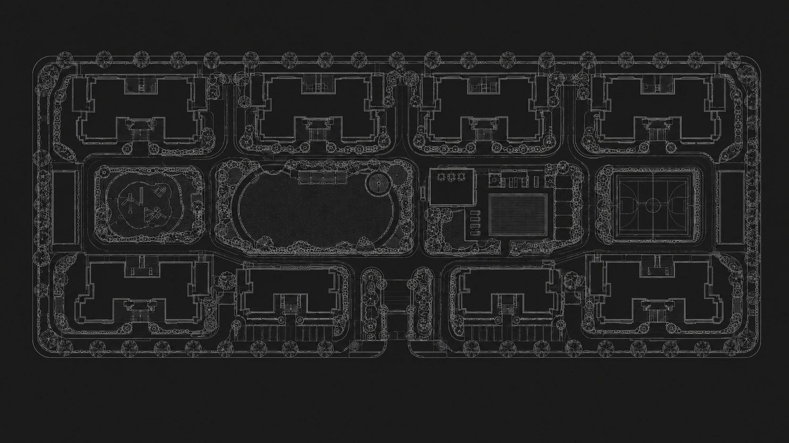

A guard on the gate is handling dozens of visitors, deliveries and
vehicles a day. Doing that leaves very little attention for actually
watching the place. mySecurity takes over the access control and only
calls a guard when something genuinely needs them — and tells them
where to go.
Works with your existing CCTV and myGate · Host on-premise or in the cloud · Live in days
!
Friendly UserLoitering
mySecurity · Riverside Campus

Event stream
24/7Every camera watched, every hour, with nobody sat at a screen
1.8sFrom something happening to an alert in the right person’s hand
18 daysTypical time a failed camera goes unnoticed on an unwatched site
40+Camera, gate, reader and sensor families it already speaks to
One system
It notices the things people miss.
Cameras, gates, visitors, equipment and emergencies are usually five
separate systems and a WhatsApp group. Watched together, an alert
arrives with the context already attached — and with far fewer of
them, because most of what moves on a site is perfectly normal.
Video intelligence
Motion alerts fire at cats and headlights. This reads the scene: a
bag left behind, someone at a door far too long, a crowd building,
a person on the ground, a shutter still open at midnight.
Exceptions worth your attention, not everything that moves.
Gates & access control
Boom barriers, sliding gates, turnstiles and door controllers driven
by policy rather than a guard's judgement. Number-plate recognition,
resident lists, delivery windows and one-tap remote open.
Visitors & deliveries
The delivery queue is what eats a guard’s day. Riders check
themselves in, hosts are notified automatically, and passes expire
on their own — so the register keeps itself and the gate stays
moving.
Equipment & environment health
Watch the things that quietly cost you money: cold-chain
temperature, generator fuel, pump rooms, high-value stock, server
racks. Thresholds, drift detection and an alert before it's a loss.
Emergency management
Fire, smoke, gas, medical and intrusion events trigger a rehearsed
playbook: unlock egress, sound the right zone, call the right people
in the right order, and hold an evidence-grade timeline.
Perimeter & intrusion
Virtual tripwires, fence-line analytics, loitering zones and
after-hours rules. The system learns what your normal looks like, so
a cat on the wall doesn't wake the whole street.
Where it reaches people
One alert, worded for whoever's reading it.
A guard needs a location and what to do about it. The secretary
needs the pattern. A resident just needs to know who's at the
gate. Same event, three different messages — on WhatsApp,
because that's what everyone already has open.
9:41
mySecurity AlertsWhatsApp
Today
🔴 Gate 2, loading dock — person on the ground, not moving. Camera 14. Go now.
9:41 pm
🟡 Block C stairwell — same visitor waiting 12 min, not badged in. Worth a look when you're free.
8:15 pm
Camera 9, basement ramp, offline 20 min. Facilities notified — no action needed from you.
7:02 pm
Today
Weekly summary — 6 alerts raised, 6 resolved, 0 still open. Full report attached.
6:00 pm
🟡 Camera 9, basement ramp, has been offline 18 hrs. Vendor ticket #4021 raised automatically.
11:20 am
Face recognition is off for every zone, same as the AGM decision. Nothing to action.
9:05 am
Today
Your guest Rohan Mehta is at the main gate.
4:52 pm
Your delivery is at Gate 2. Handover OTP: 4821
1:18 pm
A package was left at your door at 11:40 am while you were out.
Offices, retail, warehouses, factories and multi-site portfolios.
Built for shift patterns, contractors, audits and the reality of
hundreds of cameras.
Contractor and vendor check-in with document and induction checks
Dock, yard and loading-bay orchestration with ANPR
Restricted-zone, PPE and safety-compliance monitoring
Asset, cold-chain and utility-room supervision
Portfolio view across every site, with per-site permissions
mySecurity is deliberately hardware-agnostic. If it speaks a standard
protocol — or has a relay and an IP address — we can drive it.
ONVIF Profile S/T RTSP / H.264 / H.265 Boom barriers Sliding & swing gates RFID / UHF readers Wiegand / OSDP SIA / Contact ID panels Modbus / BACnet sensors MQTT device bus SIP intercoms ONVIF Profile S/T RTSP / H.264 / H.265 Boom barriers Sliding & swing gates RFID / UHF readers Wiegand / OSDP SIA / Contact ID panels Modbus / BACnet sensors MQTT device bus SIP intercoms
HikvisionDahuaCP PlusAxisUniviewHanwhaReolinkGeneric ONVIFLegacy analogue via DVR
Privacy & control
Every camera watches. Every look is logged.
A security system that leaks is not a security system. Recognition
runs on the edge appliance inside your building; only events,
not continuous video, ever need to leave the site.
Nothing leaves the building. Video is analysed on site. The cloud coordinates alerts; it never holds your footage.
Encrypted end to end. TLS in transit, AES-256 at rest, per-site key isolation.
Recognition is opt-in, zone by zone. Off by default. A committee decides where, and can turn it off again.
Every view is logged. Including ours. Residents can be shown who looked at what, and when.
Data residency you choose. Keep records in-country, or entirely on-premise.
Runs offline
Loses internet? Detection, access decisions and local sirens keep working. Events sync when the link returns.
Least privilege
Time-bound access, approval workflows for exports, and automatic revocation when someone leaves.
Privacy zones
Mask neighbours' windows, changing rooms and pavements. Redaction is enforced before the frame is stored.
Explainable alerts
Every alert carries the clip, the reasoning and the confidence — so you can challenge it, not just trust it.
Customer
“Our guards were spending the morning on the delivery register, not
on the gate. Now the register keeps itself and they’re actually
watching the place. The first thing it caught was a camera that had
been dead for a month.”
Managing committee member — 640-home gated community
Questions
The things people ask first.
No. The edge appliance pulls streams from any ONVIF or RTSP camera,
including analogue cameras behind an existing DVR. We only recommend
a replacement when a camera's placement or resolution genuinely can't
support the detection you need — and we'll tell you which ones those
are during the site survey.
A single-property residential site is typically live the same day.
A commercial site with gates, readers and alarm-panel integration
usually runs one to three weeks: a survey, an appliance install, a
week of learning your normal, then rule tuning with your team.
Everything that matters keeps running. Detection, access decisions,
local alarms and on-site notification are all handled by the edge
appliance. Remote notifications queue and deliver as soon as
connectivity returns, and an optional LTE fallback covers the gap.
That every camera watches, but nothing about them is kept beyond
what's needed. Footage is analysed on the appliance in the
building. Face recognition is off unless the committee turns it
on for a specific zone, and every single view of footage is
logged — including ours. Most societies
put this in the AGM notice, and it is usually what gets the
proposal approved rather than what holds it up.
No — it gives them their job back. Nobody can usefully watch forty
screens for eight hours; that part is arithmetic, not effort. The
guards stop doing data entry at the gate and start responding to
things that have already been checked. Most societies keep the same
team and cover far more ground with them.
Get started
Start with one question: how long has camera 7 been down?
Send us a floor plan or a camera list and we'll come back with a
coverage map, a device compatibility report and a realistic timeline.